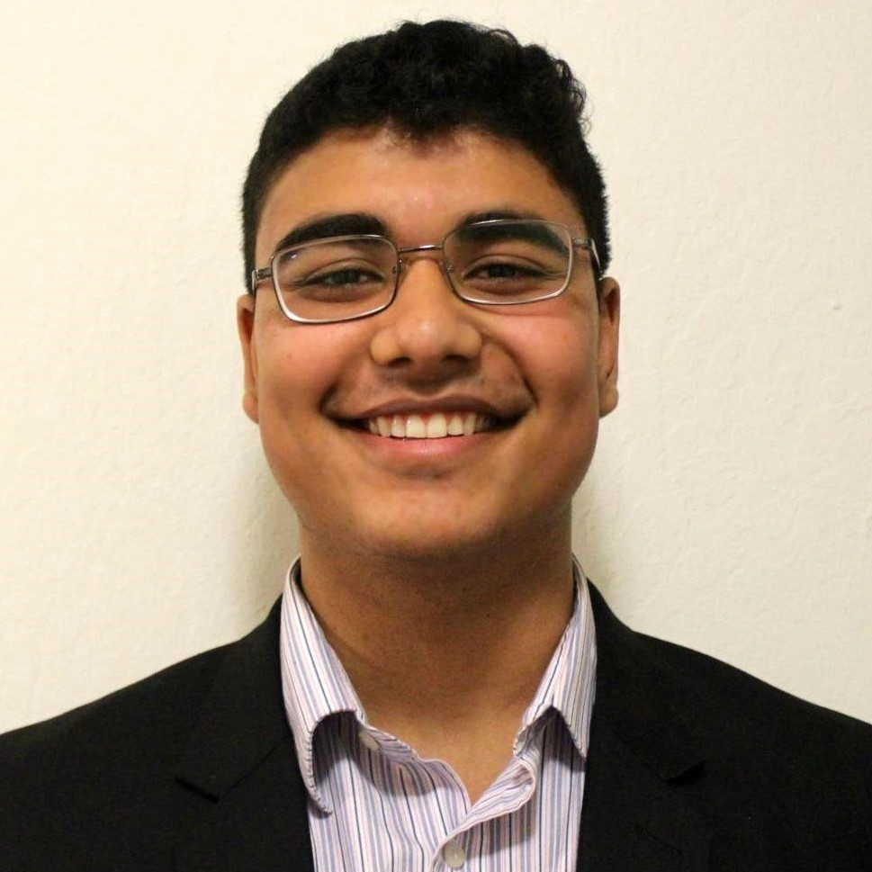
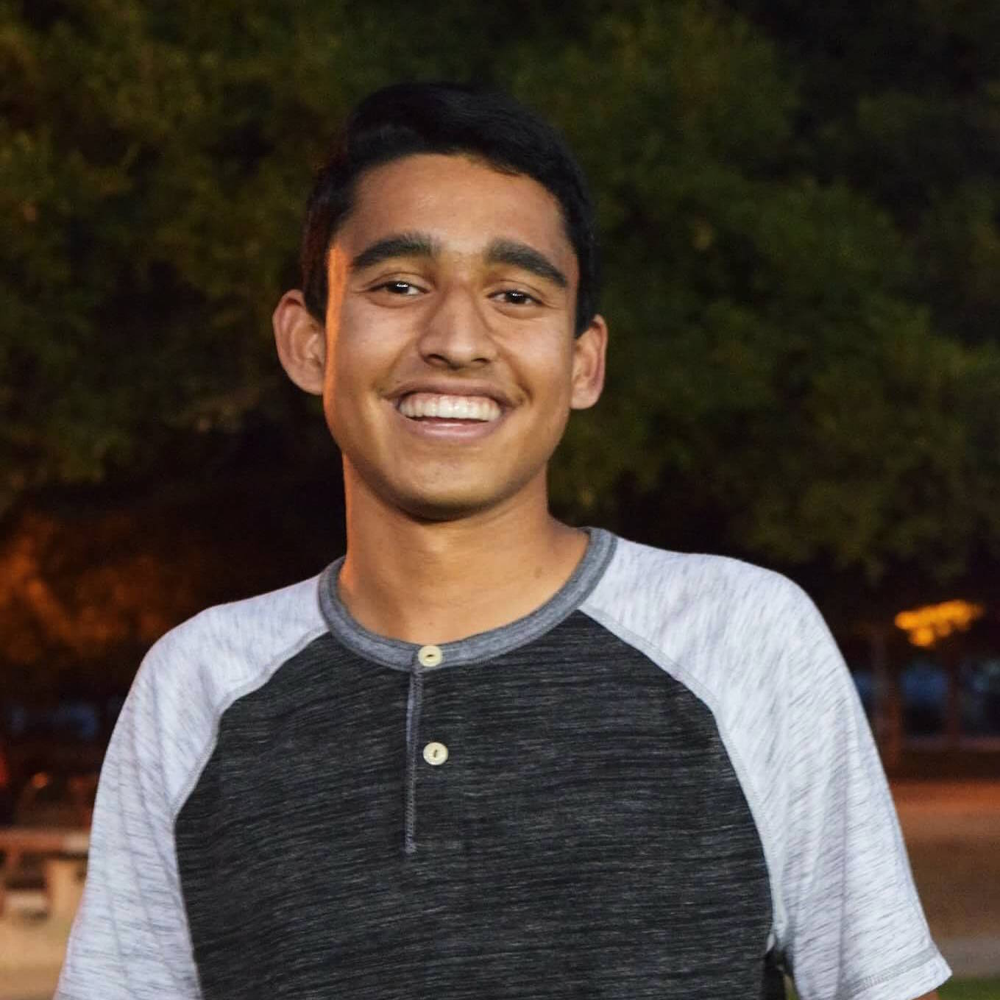
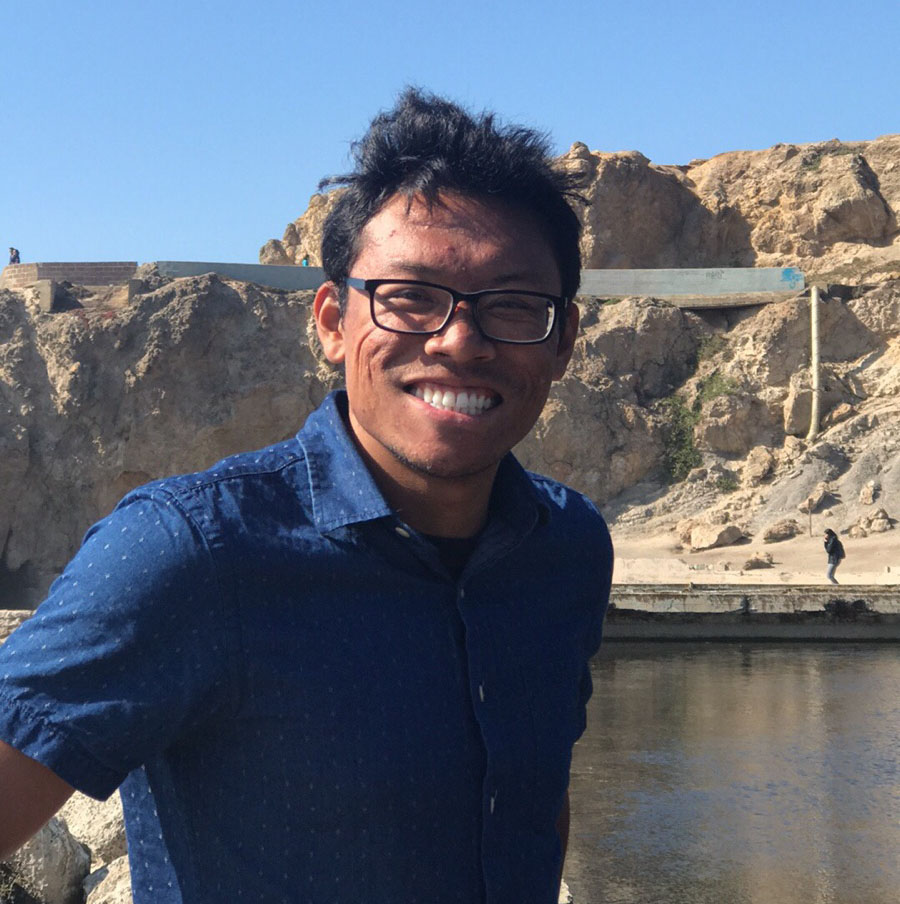

All Office Hours are held at the SLC in Cesar Chavez Student Center.
Instructor

Adam Lucas
alucas AT berkeley DOT edu
Adam did his BS in Chemistry at McGill University in Canada and his Ph.D in Mathematics (representation theory) at MIT. He was a NIH research fellow at UCSF in the area at protein folding, and then taught at Mills College and Saint Mary’s College before moving to Cal as a lecturer in Statistics in 2015. Adam is a competitive long distance runner, and follows his 13 year old son Lance to his tennis tournaments most weekends.
OH:
- MWF 10am-11am
Head uGSIs

Brian Thorsen
brianthorsen AT berkeley DOT edu
Hi everyone! I'm a 4th year Stats major, originally from Los Angeles. Aside from teaching, I love playing music (upright and electric bass), cooking and trying new recipes, and convincing local animals to live at my house.
Section:
- MW 1-2 pm @ 344 Evans (Section 104)
- MW 2-3 pm @ 344 Evans (Section 106)
OH:
- TuTh 10-12 pm

Yiming Shi
ys1998 AT berkeley DOT edu
Hey, I’m Yiming, a 3rd year majoring in statistics and economics. In my free time, I like hiking, getting caffeine-free boba, watching K-pop videos on YouTube, following crime TV shows and playing with random cats whenever I see them.
Section:
- MW 11-12 pm @ 332 Evans (Section 101)
- MW 12-1 pm @ 332 Evans (Section 102)
OH:
- MW 10-11 am
- Fri 12-2 pm
uGSIs

Abhinav Bhardwaj
abhinavb AT berkeley DOT edu
I'm majoring in Math and Stats. I love baseball, football, basketball, and cricket. Go A's.
Section:
- MW 4-5 pm @ 344 Evans (Section 110)
OH:
- Fri 10-11 am, 12-1 pm

Ren-Yi Wang (Henry)
11lelouch AT berkeley DOT edu
Hi, everyone. I am a senior student studying Applied Mathematics and Statistics. I am looking forward to working with you all!
Section:
- MW 4-5 pm @ 332 Evans (Section 109)
OH:
- MW 11-12 pm

Neil Sharma
nsharma1998 AT berkeley DOT edu
Hi, I’m Neil, a junior studying statistics and computer science. In my free time, I enjoy playing soccer, basketball, and board games.
Section:
- MW 3-4 pm @ 332 Evans (Section 107)
OH:
- Tu 12-2 pm

Peter Wang
peter.wang AT berkeley DOT edu
Section:
- MW 3-4 pm @ 344 Evans (Section 108)
OH:
- Th 1-3 pm

Srinath Goli
srig AT berkeley DOT edu
Hi! I’m a third year EECS major from the Bay Area. In my free time, I enjoy playing chess, board games, and eating at new restaurants.
Section:
- MW 12-1 pm @ 344 Evans (Section 103)
OH:
- Mon 1-2 pm
- Tu 2-3 pm
Yann Decressin
yanndecressin AT berkeley DOT edu
I am a senior double majoring in Economics and Statistics. Being german, I love all things soccer and play as a goalie for the Berkeley club team. Best TV show of all time is Twin Peaks (with Stranger Things a close second).
Section:
- MW 2-3 pm @ 332 Evans (Section 105)
OH:
- MonWed 10-11 am

Joseph Pagadora
jcpagadora AT berkeley DOT edu
I love math, music, movies, TV, and coffee.
Section:
- MW 5-6 pm @ 332 Evans (Section 111)
OH:
- Wed 3-4pm
- Th 12-1pm
Rowan Cassius
rocassius AT berkeley DOT edu
Section:
- MW 5-6 pm @ 344 Evans (Section 112)
OH:
- Th 10-11 am
Fri 2-3 pm